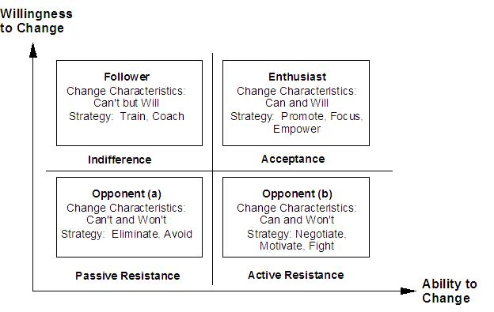
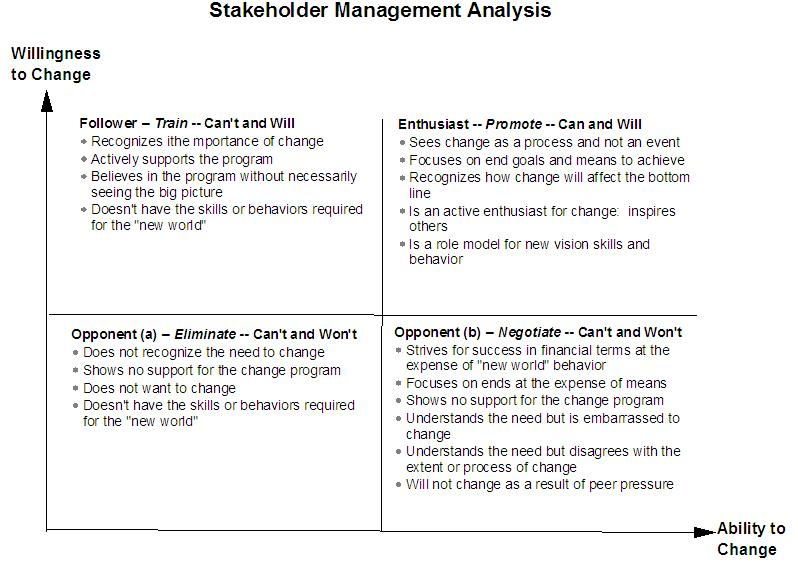
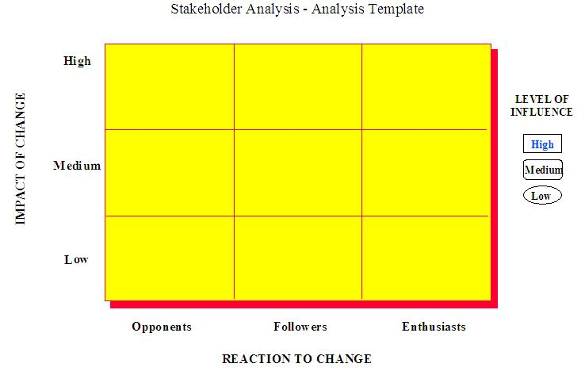
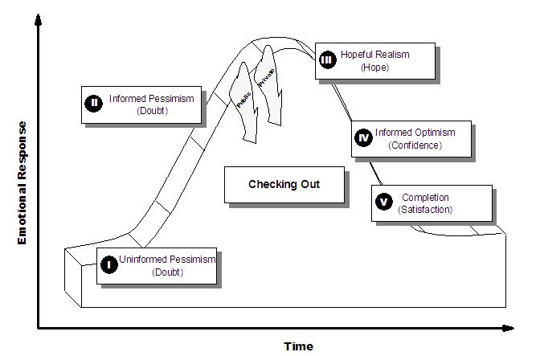
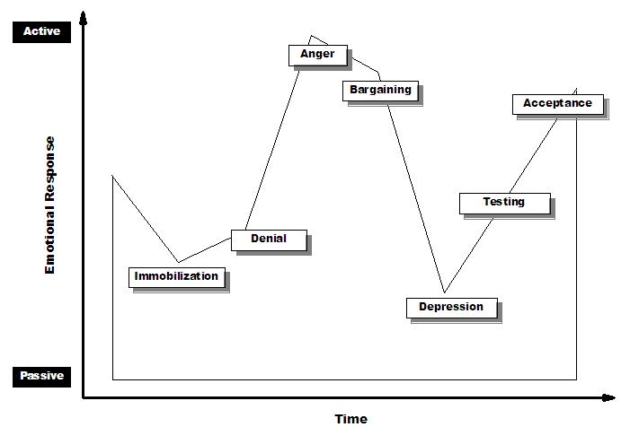

The following are the guidelines for developing a Stakeholder Participation Management plan;
1. Review business case, goals, strategy, vision from initial analysis and stakeholder groups
2. Define principles of engagement and participation
3. Segment client groups into key stakeholder groups or individual and prioritize
4. Analyze stakeholder issues and roles
5. Develop stakeholder management plan
6. Implement stakeholder management actions
7. Document and validate
8. Monitor and revise
Tools
-
Role Map
-
Stakeholder Table
-
Organization Network Analysis
-
Stakeholder Analysis Template
-
Stakeholder action table
-
Stakeholder event analysis
-
Willingness and Ability Axis
-
Action Template
Review Business Case, Goals, Strategy/Vision from Initial Analysis and Stakeholder Groups
This work product should be prepared with a full understanding of the organization’s business strategy and goals that will affect the type of engagement approach, its definition, and how stakeholders and stakeholder groups will be affected. For example:
-
If the client’s strategy is to move toward consistent, global deployment of processes, the approach to the engagement should be collaborative. It is likely that a significant number of client communities will need to be included, supported by communications tailored to a wide number of client groups.
Or,
Define Principles of Engagement and Participation
Engagement principles are a means of ensuring consistency and effectiveness in the process of involving and communicating with stakeholder groups and individuals. The complete process of engagement can be lengthy and involve numbers of different groups depending on the size and complexity of the project, and these principles can provide valuable direction. This activity contains the principles of engagement at a high level.
The senior sponsor(s) must realize the extent of involvement required from relevant staff at all levels to ensure a smooth transition and, in particular, the creation of a full time project team. The approximate requirements, including time commitments and number of people for the project team need to be agreed upon up front. When drafting the principles of engagement you might consider using:
-
An overall approach and strategy to managing participation
-
An agreement with the client to the extent of involvement required from relevant staff at all levels, including the approximate requirement for full-time staff members
-
An agreement on the types of roles client staff will perform in principle
-
An understanding that the availability of client staff will vary depending on the phase of the project and the demand of the business
-
A high-level strategy on how to involve external stakeholder groups that might be affected by the change (such as customers, suppliers, or unions)
-
An approach on how to handle groups and individuals who may join or leave the company during the course of the engagement
Segment Client Groups into Key Stakeholder Groups or Individuals, and Prioritize
Segmentation can be used to:
-
Identify key stakeholder groups or individuals within the organization whose assistance and active involvement will benefit the change initiative
-
Match the content and targeting of a change initiative to the needs and behaviors of key stakeholder groups and individuals
-
Define logical groupings within the organization to achieve the most cost-effective introduction approach
-
Focus the Project Office’s attention on real, identifiable individuals and groups to encourage a more personalized approach to the engagement
Several tools can help the segmentation process:
It is possible to segment along a variety of different criteria, such as:
-
Geographic location (country, region, town, work location)
-
Organization basis (job role, functional area)
-
Demographic basis (nationality)
-
Behavioral basis (state of readiness, attitude to the initiative)
-
Needs or benefits basis (benefits sought, feature needs, information needs)
-
Change roles (initiating sponsor, sustaining sponsor, change agent)
-
Internal/external
Be careful of over-segmentation. Segmenting into too many groups can complicate the engagement process with relatively little enhanced value. Segmentation is concerned with identifying and selecting members of the client organization who are targets for the initiative, in such a way as to group those who can be engaged in the same manner. Whenever possible, look for a common approach in addressing groups who have similar needs and characteristics.
Remember that segmentation is an iterative process. This step should be done throughout the change project to realign key stakeholder and groups. Analyze Stakeholder Issues and Roles
In 5.3 above, you loosely segmented the client organization into different groups using a high-level approach. In this step, you are digging deeper into understanding how the groups and individuals behave and react toward change. Also, you need to discover who has the greatest influence on the project and who will be highly involved. It may be necessary to re-segment your stakeholder groups as a result of your findings. 1. Classify stakeholders according to their reactions to change
2. Classify key stakeholders according to their level of involvement
3. Plot stakeholder analysis
4. Define stakeholder objectives
Classify Stakeholders According to their Reactions to Change
Before an analysis can be conducted of the key stakeholder groups or individuals whom you have segmented in step 5.3, it is necessary to establish the kinds of reactions/responses that will be encountered during the process of change. Change will elicit the following human responses:
-
Passive resistance
-
Active resistance
-
Indifference
-
Acceptance
Each of these responses can be mapped onto the following Willingness and Ability axis. The titles are followed by possible mechanisms to cope with their behaviors, i.e., someone who has a high willingness to change, but doesn’t possess the skills to do so would be categorized as "Follower - Can’t & Will"”
Use the following table to help classify individuals and groups by identifying some of the characteristics specific to each. 

Map each key stakeholder group or individual onto an area of the Willingness and Ability Axis. This process will help clarify stakeholder groups feelings about and behaviors toward change. It will help identify like-minded individuals who can be conveniently grouped as a stakeholder audience.
Classify Key Stakeholders According to their Level of Involvement
As indicated in the Stakeholder Table, all stakeholders have different levels of involvement and influence on the change program. You should now confirm and refine these levels according to the following criteria:
-
Level of involvement - what kind of impact the change is going to have on stakeholders. Develop the measures on how to classify the level of involvement, for example:
-
Stakeholder’s whole job and department changes due to the change initiative (High).
-
There will be some shuffling of job responsibilities for the stakeholder (Medium).
-
The stakeholder will not be affected at all by the change (Low).
-
Level of influence - what kind of impact the stakeholder will have on the change initiative. Develop the measures on how to classify the level of influence, for example:
-
Stakeholder can block or enable the the change initiative (High).
-
Stakeholder can make the change more difficult or easier (Medium).
-
Stakeholder will have little to no impact on the change initiative (Low)
Both the reactions to change and the levels of involvement and influence can be best captured in the Stakeholder Table:
Stakeholder/Group |
Level of Involvement |
Level of Influence |
Reaction to Change |
|
|
|
|
|
|
|
|
|
|
|
|
Plot Stakeholder Analysis
The information from the Stakeholder Table needs to be plotted against the Stakeholder Analysis Template below. This will enable you to prioritize and focus your efforts on the areas where there is the most resistance to the change by stakeholders who have the highest level of involvement and influence

Define Stakeholder Objectives
For each of the key stakeholders in the change process, you now need to assess what level of support and attention is required for the change to have the greatest chances of success. From the Stakeholder Analysis - Analysis Template, you can determine who the key players are, whether each is an Opponent, Follower, or Enthusiast and in what direction their attitude ideally needs to move or change, if at all. This helps to prioritize actions and shows where a greater or lesser degree of effort is required.
A matrix like the following example may be useful to see where to focus your attention:
Key Stakeholders |
Opponents |
Followers |
Enthusiasts |
Financial Director |
|
|
X O |
IT Manager |
|
X |
O |
Purchasing Team |
|
X |
O |
Operations Staff |
X |
O |
|
X = Current State
O = Desired State
Develop Stakeholder Management Plan
To develop an effective Stakeholder Plan, you must know how much effort and attention to direct at which stakeholder(s) and when these activities need to happen. Work closely with the Communications team in developing the stakeholder plan. 1. Review implementation plan to identify key milestones
2. Determine stakeholder needs and issues at each phase
3. Design change management activities to respond to stakeholder needs and issues
4. Develop stakeholder plan and map to project timing
Review Implementation Plan to Identify Key Milestones
You must understand how the project is going to roll out so that you can understand how each stakeholder will be affected at each stage of the project implementation. This will act to guide the levels of information and involvement activities for each stage. As a rule, you should provide information and involvement activities before any major phase of the implementation begins, as it will prepare people for the change and lessen the chances of resistance.
Determine Stakeholder Needs and Issues at each Phase
Each stakeholder group and individual may experience different reactions to each phase of the change initiative. What may seem very threatening to one group may not even register to another stakeholder group. One group may need to be very involved in a phase, whereas another group need only hear an update. Map this out using following matrix:
Area of Change |
Impact |
Stakeholder |
Anticipated Response/Issues |
Change Management Activities |
Project Kickoff |
Uncertainty |
Project office |
Insecurity |
|
Phase I |
Lack of knowledge |
Operating staff |
Insecurity, fear of unknown |
|
Phase I |
Fear of Job Loss |
Finance Director |
Defensiveness |
|
In anticipating specific responses to change, it can be useful to refer to the Emotional Response to Positively Perceived Change and the Emotional Response to Negatively Perceived Change from IBM’s change management framework, shown below. Emotional Response to Positively Perceived Change

Emotional Response to Negatively Perceived Change

This model is an adaptation of Elizabeth Kubler-Ross’s clinical work with terminally ill patients.
Design Change Management Activities to Respond to Stakeholder Needs and Issues
Using the anticipated reactions and issues that you have projected by phase, develop methods and activities to manage those emotional responses and issues.
Area of Change |
Impact |
Stakeholder |
Anticipated Response/Issues |
Change Management Activities |
Project Kickoff |
Uncertainty |
Project office |
Insecurity |
Involve everyone in kickoff and project planning |
Phase I |
Lack of knowledge |
Operating staff |
Insecurity, fear of unknown |
Training |
Phase I |
Fear of Job Loss |
Finance Director |
Defensiveness |
Interview, involve in process |
At key milestones or events in the project plan, it is good practice to get large groups together to promote broad based participation.
Develop Stakeholder Plan and Map to Project Timing
Once you know what change management activities need to occur, develop a timeline that works with the engagement timeline. Be responsive to changes in engagement timing and work closely with the communication planning.
Stake-
Holder |
Week 1 |
Week 2 |
Week 3 |
Week 4 |
Week 5 |
Week 6 |
Week 7 |
Week 8 |
Operating staff |
Kick-off meeting |
Focus groups |
Newsletter |
|
Town Hall |
Training |
Town Hall |
|
Finance Manager |
Kick-off meeting |
Meet with project sponsor |
Newsletter |
Progress Meeting |
Town Hall |
|
Town Hall |
|
Implement Stakeholder Management Actions
1. Develop change management material
2. Organize change management events
3. Conduct change management events
Develop Change Management Material
After you have identified what activities are necessary to address and target the key stakeholder groups, you must develop the materials that will facilitate the change management activities. Work closely with the communications team to manage the style, production of, and channels for the material. Some examples are:
Organize Change Management Events
For each change management event, the following activities need to be conducted:
-
Select a date and time
-
Find and reserve a suitable venue
-
Design and send invitations to the event
-
Elicit and monitor feedback
Conduct Change Management Events
Each of these events should allow for plenty of time for questions and issue raising. For each change management event, fill out the following chart:
Event |
Audience |
Date/Venue |
Anticipated Reaction before Event |
Anticipated Reaction after Event |
Notes |
Kickoff meeting |
Project team, operating staff, sponsors |
Monday, 8/2/99
Auditorium |
Skepticism, uncertainty, nervousness |
General knowledge of planned change, higher comfort level |
|
Document and Validate
This work product needs to be reviewed by the client executives who are sponsoring the project at every stage in the planning. You need to work closely with the communications team so that strategies are aligned. HR and communications specialists in the organization need to validate the strategy and highlight any risk areas. Monitor and Revise
This is an iterative process, so while the stakeholder plan is being implemented, you must continually focus on whether the:
-
Stakeholders are grouped appropriately.
-
Stakeholders are beginning to support the change initiative in the desired way.
-
Change management activities and events are working effectively.
Change the plan as necessary to identify possible signs that the plan needs to be reworked.
Additionally, this work product significantly affects and is affected by the Communications work product. If changes are made to that strategy and roll out, it may be necessary to make the changes here. |